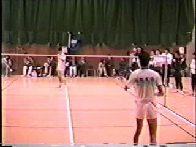
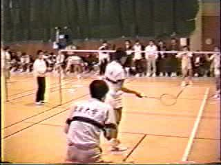
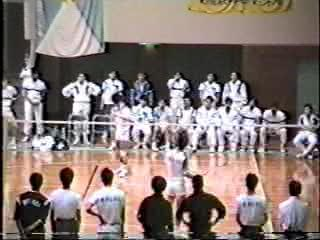
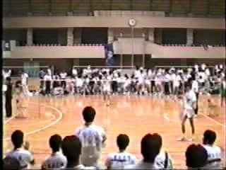
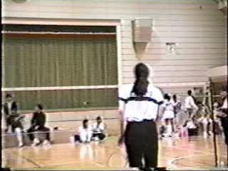
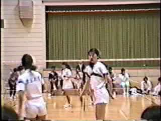
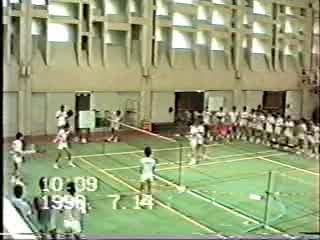
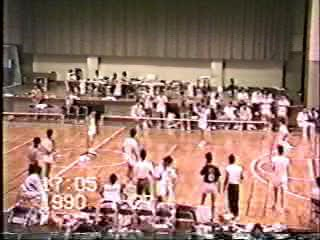

|  |  |  |  |
|
1990年 春リーグ戦 前間(東大) 対 笠原(創価大) 戦 勝利して、4部優勝を決めたところ (15sec) |
1990年 春リーグ戦 戸塚・後藤(東大) 対 野々下・中村(創価大) 戦 (10sec) |
1990年 春リーグ入替戦 石田(東大) 対 宮本(東経大) 戦 入替戦1戦目に勝利したところ (20sec) |
1990年 春リーグ入替戦 前間(東大) 対 花戸(明治学院大) 戦 勝利して、3部昇格を決めたところ (20sec) |
|  |  |  |  |
|
1990年 春リーグ戦 小西(東大) 対 久保(成蹊大) 戦 (16sec) |
1990年 春リーグ戦 久我・小西(東大) 対 森・関矢(成蹊大) 戦 (20sec) |
1990年7月14日 京大戦 戸塚・後藤(東大) 対 古川・舟山(京大) 戦 (10sec) |
1990年7月27日 七帝戦の試合@北大 (10sec) |